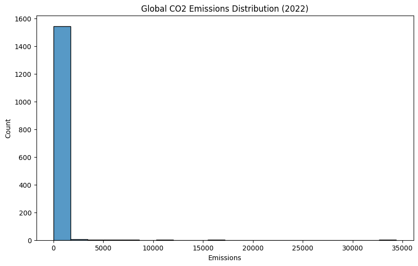
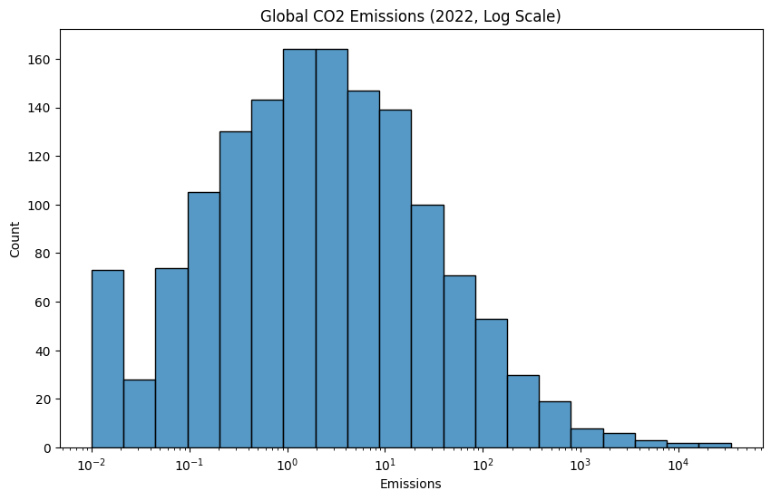
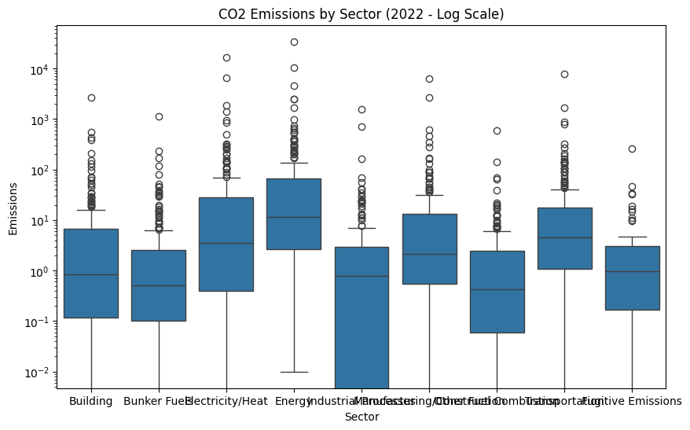
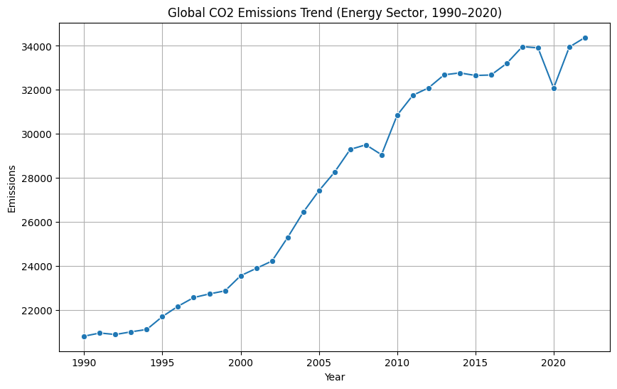

Question 1: Do CO₂ emissions differ significantly across the Energy, Transportation, and Manufacturing/Construction sectors globally in 2022?
Question 2: How have global CO₂ emissions in the Energy sector changed over time (1990–2022)?
Data Preprocessing
Install & Import
# Install pandas if needed!pip install pandas# Import librariesimport pandas as pdimport numpy as npimport matplotlib.pyplot as pltimport seaborn as snsfrom scipy import stats
Requirement already satisfied: pandas in /usr/local/lib/python3.11/dist-packages (2.2.2)
Requirement already satisfied: numpy>=1.23.2 in /usr/local/lib/python3.11/dist-packages (from pandas) (2.0.2)
Requirement already satisfied: python-dateutil>=2.8.2 in /usr/local/lib/python3.11/dist-packages (from pandas) (2.9.0.post0)
Requirement already satisfied: pytz>=2020.1 in /usr/local/lib/python3.11/dist-packages (from pandas) (2025.2)
Requirement already satisfied: tzdata>=2022.7 in /usr/local/lib/python3.11/dist-packages (from pandas) (2025.2)
Requirement already satisfied: six>=1.5 in /usr/local/lib/python3.11/dist-packages (from python-dateutil>=2.8.2->pandas) (1.17.0)
Load Data
# Load the dataset (replace "your_file.csv" with your actual filename)from google.colab import filesuploaded = files.upload()# Read the CSV filedf = pd.read_csv('/content/historical_emissions.csv') # Update filename
Saving historical_emissions.csv to historical_emissions (3).csv
Initial Exploration
# Check missing values per columnprint(df.isnull().sum())
# Check first 5 rowsprint(df.head())# Check columns and data typesprint(df.info())# Check unique values for key columnsprint("Countries:", df['Country'].unique())print("Sectors:", df['Sector'].unique())print("Gases:", df['Gas'].unique())
# Melt the dataframe to convert year columns into rowsdf_long = df.melt( id_vars=['ISO', 'Country', 'Data source', 'Sector', 'Gas', 'Unit'], var_name='Year', value_name='Emissions')# Convert Year column to integer (currently stored as string)df_long['Year'] = df_long['Year'].astype(int)# Sort by Country, Sector, and Year for readabilitydf_long = df_long.sort_values(by=['Country', 'Sector', 'Year'])# Drop rows with missing emissions valuesdf_long = df_long.dropna(subset=['Emissions'])# Show the first 5 rows of the reshaped dataprint("\nReshaped Data (Long Format):")print(df_long.head())
Reshaped Data (Long Format):
ISO Country Data source Sector Gas Unit Year \
243296 AFG Afghanistan Climate Watch Agriculture All GHG MtCO₂e 1990
243510 AFG Afghanistan Climate Watch Agriculture CH4 MtCO₂e 1990
244154 AFG Afghanistan Climate Watch Agriculture N2O MtCO₂e 1990
235725 AFG Afghanistan Climate Watch Agriculture All GHG MtCO₂e 1991
235939 AFG Afghanistan Climate Watch Agriculture CH4 MtCO₂e 1991
Emissions
243296 8.07
243510 5.36
244154 2.70
235725 8.39
235939 5.60
Descriptive Analysis
# Histogram of CO2 emissions globally (2022)df_2022_co2 = df_long[(df_long['Year'] ==2022) & (df_long['Gas'] =='CO2')]plt.figure(figsize=(10, 6))sns.histplot(data=df_2022_co2, x='Emissions', bins=20)plt.title('Global CO2 Emissions Distribution (2022)')plt.show()

Global CO₂ Emissions Distribution (2022)
Distribution Shape:
The histogram is strongly right-skewed, with most data clustered on the left.
Key Observations:
Most countries/regions have low emissions (≤5,000 MtCO₂e).
A small subset of high emitters (e.g., China, USA, India) dominate the upper range (up to 35,000 MtCO₂e).
Implication: “Global CO₂ emissions are highly concentrated, with a few economies disproportionately driving climate impacts.”
plt.figure(figsize=(10, 6))sns.histplot(data=df_2022_co2, x='Emissions', bins=20, log_scale=True)plt.title('Global CO2 Emissions (2022, Log Scale)')plt.show()

Global CO₂ Emissions Distribution (2022, Log Scale)
Visual Enhancement:
Using a logarithmic scale for emissions (x-axis) improves clarity by compressing the extreme right-skewed data into a more interpretable format.
Distribution Insights:
Most countries cluster in the lower emission range (10⁻² to 10² MtCO₂e), reflecting modest carbon footprints.
A sharp drop-off occurs beyond 10² MtCO₂e, with only a handful of high-emitting countries (e.g., China, USA) reaching 10³–10⁴ MtCO₂e.
The long tail on the right confirms extreme disparities in emissions contribution.
Key Takeaway: “The log scale reveals that while most nations emit minimally, a small group of outliers drives the majority of global CO₂ emissions.”
# Boxplot to visualize outliersplt.figure(figsize=(10, 6))sns.boxplot(data=df_2022_co2, x='Sector', y='Emissions')plt.yscale('log')plt.title('CO2 Emissions by Sector (2022 - Log Scale)')plt.show()

CO₂ Emissions by Sector (2022 - Log Scale)
Key Observations:
Emissions are plotted on a logarithmic scale (ranging from (10^{-2}) to (10^4) MtCO₂e) to accommodate extreme variations across sectors.
Dominant Sectors:
Energy and Electricity/Heat dominate emissions ((103)–(104) MtCO₂e), reflecting fossil fuel reliance.
Transportation and Manufacturing/Construction fall in the mid-range ((101)–(102) MtCO₂e).
Low-emitting sectors like Building and Agriculture cluster near (100)–(10{-1}) MtCO₂e.
Outliers: Fugitive Emissions (e.g., methane leaks) show sporadic spikes.
Why This Matters: “The Energy sector remains the largest contributor to CO₂ emissions, underscoring the urgency of transitioning to renewable energy sources.”
Inferential Analysis
# Filter data for 2022, CO2 emissions, and key sectorssectors_to_compare = ['Energy', 'Transportation', 'Manufacturing/Construction']df_anova = df_2022_co2[df_2022_co2['Sector'].isin(sectors_to_compare)]# Run ANOVAf_stat, p_value = stats.f_oneway( df_anova[df_anova['Sector'] =='Energy']['Emissions'], df_anova[df_anova['Sector'] =='Transportation']['Emissions'], df_anova[df_anova['Sector'] =='Manufacturing/Construction']['Emissions'])print(f"ANOVA Results:\nF-statistic = {f_stat:.2f}\np-value = {p_value:.4f}")
No statistically significant difference in CO₂ emissions between the Energy, Transportation, and Manufacturing/Construction sectors in 2022.
The p-value > 0.05 indicates that observed differences are likely due to random variation.
Implication: “At a global aggregate level, these sectors contribute similarly to CO₂ emissions, suggesting no single sector dominates disproportionately in 2022.”
Analyze Trends Over Time (Linear Regression)
# Filter global Energy sector CO2 emissionsglobal_energy = df_long[ (df_long['Country'] =='World') & (df_long['Sector'] =='Energy') & (df_long['Gas'] =='CO2')]# Fit regressionslope, intercept, r_value, p_value, _ = stats.linregress( global_energy['Year'], global_energy['Emissions'])print(f"Slope = {slope:.2f}\nR² = {r_value**2:.2f}\np-value = {p_value:.4f}")
Slope = 501.20
R² = 0.96
p-value = 0.0000
Linear Regression Results (Energy Sector Trend)
Slope = 501.20 | R² = 0.96 | p-value = 0.0000
Interpretation:
Slope: Emissions increased by 501.20 MtCO₂e/year from 1990–2022.
R²: 96% of the variance in emissions is explained by the year (near-perfect linear trend).
p-value: The trend is statistically significant (p < 0.001).
Implication: “Global Energy sector emissions are rising relentlessly, demanding urgent policy action to curb fossil fuel dependency.”
Trend Visualization
plt.figure(figsize=(10, 6))sns.lineplot(data=global_energy, x='Year', y='Emissions', marker='o')plt.title('Global CO2 Emissions Trend (Energy Sector, 1990–2020)')plt.xticks(global_energy['Year'][::5]) # Show every 5th yearplt.grid(True)plt.show()

Global CO₂ Emissions Trend (Energy Sector, 1990–2020)
Trend Analysis:
Emissions rose steadily from ~22,000 MtCO₂e (1990) to ~34,000 MtCO₂e (2020).
The near-linear upward trajectory aligns with the regression result (Slope = 501.20 MtCO₂e/year).
No significant dips or plateaus, indicating unabated growth in energy-related emissions.
Key Insight: “Despite global climate agreements, CO₂ emissions from the Energy sector have increased consistently for three decades, highlighting systemic challenges in decarbonization.”
Answers to Questions
Question 1:
Do CO₂ emissions differ significantly across the Energy, Transportation, and Manufacturing/Construction sectors globally in 2022?
- Answer: No.
- ANOVA Result: No significant difference (p = 0.1343).
- Conclusion: Emissions across these sectors are statistically similar at the global level in 2022.
Question 2:
How have global CO₂ emissions in the Energy sector changed over time (1990–2022)?
- Answer: Sharply increased.
- Regression Result: +501.20 MtCO₂e/year (R² = 0.96, p < 0.001).
- Conclusion: A near-perfect upward linear trend indicates unchecked growth in energy-related emissions.